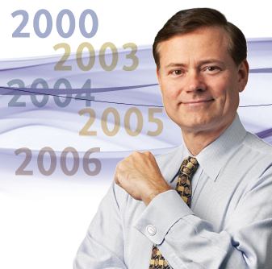
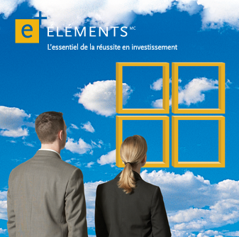
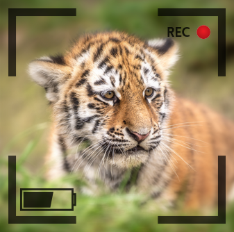
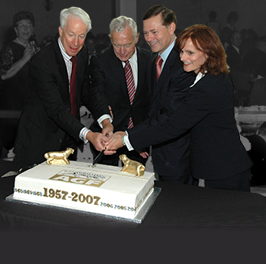

2000
Une société de placement diversifiée et internationale
-
« La persistance et l’innovation sont les caractéristiques des meilleures sociétés au Canada…
Comme toujours, nous sommes tournés vers l’avenir, mais nous demeurons centrés sur les valeurs et priorités qui motivent nos clients et investisseurs. »
– Warren Goldring
-
2000 L’expansion se poursuit

2000 : Acquisition de Global Strategy Financial Inc.
2005 : Établissement de l’équipe des services aux comptes institutionnels mondiauxAcquisition de sociétés de gestion de l’investissement privées :
2003 : P.J. Doherty & Associates
2004 : Cypress Capital Management
2006 : Highstreet Asset Management Inc. -
2002 Lancement du programme Choix judicieux à l’intention des conseillers
Initialement appelé SatisVie, ce programme d’expansion des affaires – le premier proposé par une société de services financiers au Canada – aide les conseillers en placement et leurs clients à planifier leur vie en accord avec leurs objectifs financiers.
-
2005 Éléments AGF voit le jour
Ce nouveau produit, qui consiste dans des fonds de fonds, récolte plus d’un milliard de dollars de placements au cours de sa première année, ce qui en fait l’un des lancements de produits les plus fructueux de l’histoire de l’industrie.
-
2006 et 2008 :
AGF est désignée Choix des conseillers comme société de fonds de placement de l’année aux Prix Morningstar pour l’investissement canadien.
-
2007 La webcam AGF des bébés tigres est installée au Zoo de Toronto
« AGF a est fière d’avoir commandité la webcam des bébés tigres au Zoo de Toronto et d’avoir ainsi pu permettre aux Canadiens d’assister à la croissance et au développement de ces animaux exceptionnels. Grâce à cette webcam, nous avons pu découvrir le monde précédemment caché des tigres de Sumatra, l’une des espèces les plus menacées de la planète. »
Blake Goldring, président, AGF
-
2007 50 années ancrées dans la stabilité
Le thème du 50e anniversaire d’AGF – un esprit moderne pour un résultat classique toujours à la hauteur des attentes – décrit parfaitement l’essence de l’entreprise.
Au fil des décennies, AGF ne cesse de miser sur son esprit novateur et continuera ainsi à l’avenir.